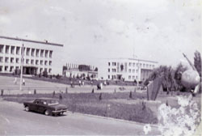
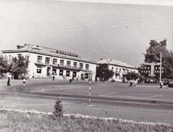
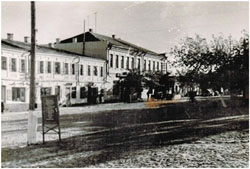
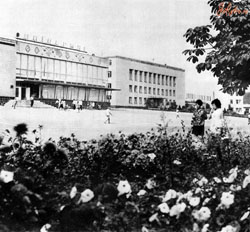
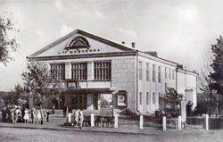
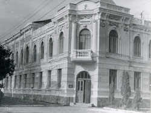
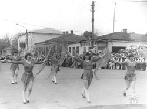

Реконструкція пам’яті. Фото 1960-1980 років
21. У центрі Радомишля. Перша половина 1970-х років.
Усе видиме і невидиме на зображенні відображає радянський період життя міста. На Червоній площі (історична назва Торгова площа) ліворуч розташована головна будівля — Районний комітет Комуністичної партії України. Праворуч — Районний вузол зв’язку, стіну якого «освячує» панно з вождем усіх трудящих. Навколо Ілліча зображені прапори братніх республік Радянського Союзу. Між будинками — п’ятнадцять щогл із червоними прапорцями, що символізують ті ж республіки. Нижче розміщені стенди з показниками відвантажень продукції підприємств району в «закрома родіни».
За вікнами райкому, з протилежного боку вулиці, безупинно пильнують очі Маркса, Енгельса та Леніна. Їхні погляди зафіксовані на стандартному трифігурному барельєфі, встановленому на червонуватій, оздобленій «під шубу» мурованій стелі. Поряд зі стелою — серп, у якому обертається глобус Землі. На вістрі серпа над Землею піднята ракета як символ досягнень соціалізму. Всередині був не Гагарін, а радіодинамік, що віщав про мудру керівну роль партії.
Щоправда, віщав він недовго: з часом Земля перестала крутитися, «океани» розірвалися, а «материки» обвисли, оголивши арматурні дуги глобуса. Проте вихід знайшли: глобус прибрали, а в серп вварили величезний молот (листового металу на машзаводі не бракувало). Так постала класична радянська емблема — символ союзу робітників і селян.

Реставровано та колоризовано з фото невідомого автора.22. У центрі Радомишля. 1970-ті роки.
На фото — будівля, зведена у 1963 році, у якій спочатку розмістилися ресторан, кафе, гастроном та універмаг. У 1972 році гастроном перемістили на місце універмагу, а останній переїхав у нову двоповерхівку (зараз магазин «Всесвіт»). Наявність дерев ліворуч вказує на те, що будівництво Торгового центру ще не розпочато, отже, знімок зроблений до 1979 року. Перенесення гастроному у нову будівлю відбулося у 1981. Після цього на місці магазину відкрили кулінарію.
Кафе на другому поверсі зазвичай працювало під замовлення — фактично це був другий зал ресторану. В часи Перебудови на першому поверсі ліворуч відкрився бар. Інтер’єр цього закладу був простеньким: оздоблення з обпаленої дерев’яної вагонки, покритої лаком. За барною стійкою було розташовано ряд антресолей. У великих дзеркалах їхніх дверцят, розташованих під кутом, відбивалися барна стійка і периметр столиків разом із відвідувачами.
Родзинкою бару була облаштована посередині зали світломузична підлога, різнокольорові квадрати якої перемикалися в такт музиці. Такому танцполу позаздрила б і сцена Сан-Ремо! До того ж у барі почали готувати перші коктейлі. Після радянського вино-горілчаного «всесвіту» все це було настільки незвично, що в закладі щовечора був аншлаг. Далі на фото видно готель «Радомишль» (збудований у 1961 р.) — він на своєму звичному місці, але ще без магазину. Праворуч розташована районна Дошка пошани.

Реставровано та колоризовано з фото Є.В. Оржехівської.23. Мить із життя Радомишля 1960-х років.
Спокій на вулиці, тоновані теплим кольором стіни будинків та довгі тіні на бруківці позначають день, що згасає. На сьогодні з цього пейзажу залишилась лише одна будівля — та, що праворуч. Кілька десятиліть у ній була розташована школа бухгалтерів, а перший поверх з боку головного фасаду займали магазини.
Там, де зараз «Автолідер», колись була книгарня. Я часто заходив до неї в очікуванні знайти щось цікаве для себе, любив розглядати книжки на її полицях, вдихаючи аромат свіжого друку. Купував переважно довідники та мапи — радянська література викликала лише нудьгу. Час від часу «викидали» й цікаві художні твори, проте придбати їх можна було не завжди: лише за довідку про здачу певної кількості макулатури або «по блату».
Серед багатьох крамниць, що пройшли крізь час, стіни цього будинку пам’ятають ще магазин «Торгсін» (торгівля з іноземцями). У магазині приймали натільні хрестики, обручки, сережки та інші реліквії. Оцінювали їх «на око»: за золоту каблучку могли дати лише кілограм крупи або буханець хліба. Геннадій Цвік у книзі «Історія Радомишля» зазначає, що у 1932–1933 роках такі пункти скуповування діяли по всій країні. Комуністичний режим створив умови для викачування із селян родинних коштовностей в обмін на виживання.
На світлині ліворуч — житловий будинок, який розібрали в середині 1970-х років. На його місці звели триповерхівку з аптекою. У старому ж будинку на першому поверсі розташовувалося кілька крамниць. Пам’ятаю лише «Спорттовари»: у кутку там стояли стоси лиж різних розмірів і кольорів. Одні із них стали моїми, а ще якоїсь зими мама купила мені й ковзани. Напевно, тому і запам’яталась ця крамниця.
Сьогодні з усмішкою і легким сумом усвідомлюю: я з тих людей, хто ще пам’ятає справжню бруківку в центрі Радомишля.

Базове фото Петра Шуневича24. Універмаг. 1970-ті роки.
Ця двоповерхова будівля була зведена у 1972-му спеціально під Універмаг. У 81-му магазин переїхав до новозбудованого «Торгового центру», а на його місці відкрився «Дитячий світ», що працював до 90-х. Нині тут знаходяться магазин «ВсеСвіт».

Базове фото невідомого автора.25. Кінотеатр ім. Т. Г. Шевченка. Листівка 1963 р.
Будівля була зведена у 1962 році і використовувалася за призначенням протягом майже двох десятиліть.
Однак через серйозні прорахунки під час будівництва у стіні з’явилася тріщина. Її неодноразово намагалися залатати, але вона щороку збільшувалася, буквально розколюючи будівлю навпіл.
Згодом було знайдено технічне рішення: стіни кінотеатру на двох рівнях стягнули по периметру міцними швелерами. Цей метод нагадував залізні обручі на дерев’яній діжці. Завдяки такому «армуванню» споруду вдалося врятувати від неминучого руйнування, і вона дожила до наших днів.
Сьогодні призначення будівлі змінилося: після капітального ремонту тут розмістилися Публічна бібліотека-медіатека та Центр дозвілля для молоді.

Базове Фото Олександра Сахневича.26. Районна лікарня. 1960-ті роки.
Колишня повітова земська управа. Зведена у 1911 (можливо, 1906) році. У ранній радянський період — осередок партійних органів, а з 1929 року — лікарня. На жаль, сьогоднішній вигляд будівлі поступається первісному; історичний фасад потребує фахової реконструкції.

Базове фото невідомого автора.27. Першотравнева демонстрація. 1980 рік.
Демонстрації трудящих у радянські часи були обов’язковим ідеологічним заходом. Вони традиційно проходили 1 та 9 травня, а також 7 листопада. Судячи зі стану природи на світлині, перед нами саме 1 травня 1980 року — День солідарності трудящих. Дерева щойно почали зеленіти, а олімпійські кільця на спортивній формі дівчат нагадують про наближення Олімпіади-80, окремі етапи якої приймав і Київ.
На фото зафіксовано момент демонстрації на розі вулиць Великої Житомирської та Присутственої. За глядачами, що вишикувалися вздовж дороги, видно архітектурне обличчя тогочасного міста:
• На розі — продовольчий магазин, відомий як «Угловий». На початку ХХ століття тут знаходилася друкарня Єлі Заєзного. У 80-х роках будівлю розібрали як аварійну.
• Далі за ним — їдальня, яку в народі називали «Верхня столова». У 90-х її перебудували під бар «Оскар», а наприкінці 2000-х після повної реконструкції там певний час працював «Райффайзен Банк Аваль». Зараз у цій будівлі — магазин одягу.
• Двоповерховий будинок — колишня контора РАПО (Районного агропромислового об'єднання). На початку 2000-х споруду демонтували, звівши на її місці Районний центр зайнятості.
• Вдалині — будівля краєзнавчого музею, яка збереглася до наших днів.

Базове фото невідомого автора.